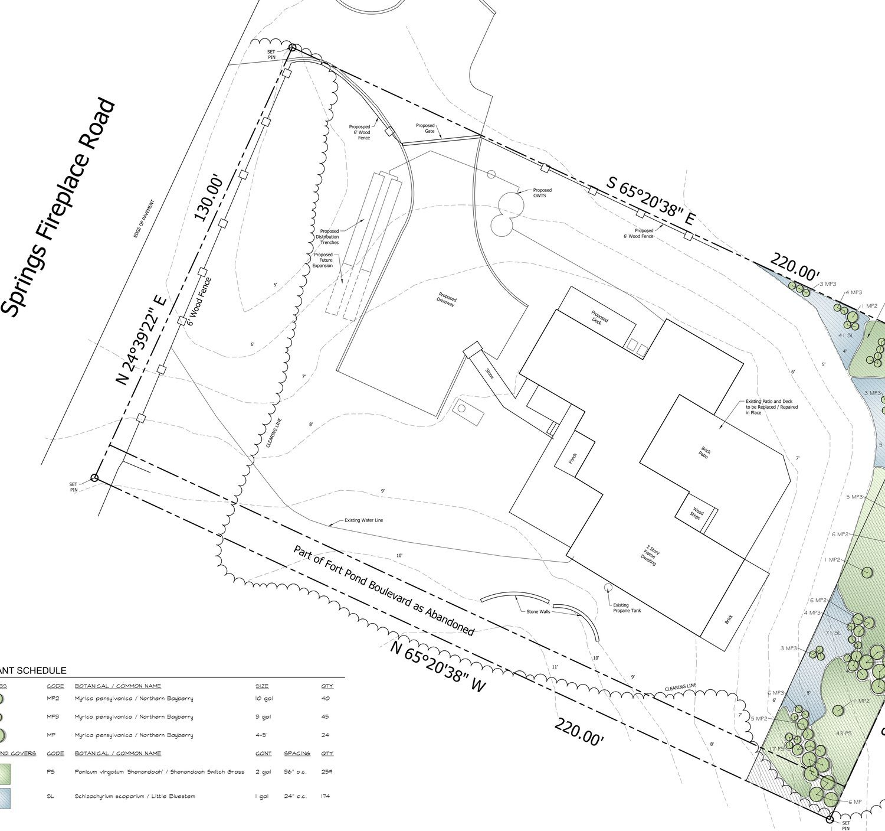

Gary Benz survey · Grimes plan, 18 November 2021
The surveyed site plan, with the album photographs from the renovation before this one set against the finished house.
How things are filed: an interior sits under the building it is inside; an exterior sits under the ground the camera was standing on. So every outside view of the barn is under the east side rather than under the barn. A few photographs show more than one thing and appear in more than one place.
1 Tap a marker — the photographs below change

Lot 130′ × 220′. Road and motor court west, wetlands east. Solid markers sit on something the survey labels or the owner confirmed; a dashed marker is placed by eye.
The property was four separate buildings, running roughly west to east: the volume that is now the front entrance, the garage range beside it, the building that became the great room, and furthest east — closest to the water — the barn. The previous renovation pulled them into the single footprint the survey draws.
The survey never subdivides that footprint. It labels 2 Story Frame Dwelling, Porch, Brick Patio and Wood Steps, and nothing else. So the markers for the entrance, the great room and the barn are placed along the west-to-east order the photographs establish, not on lines anyone surveyed. The order is solid; the exact positions are not.
The plan is dated during this renovation, not before it. Everything marked Proposed — the deck, the driveway, the septic — is the current work; everything marked Existing is what the previous renovation left behind.